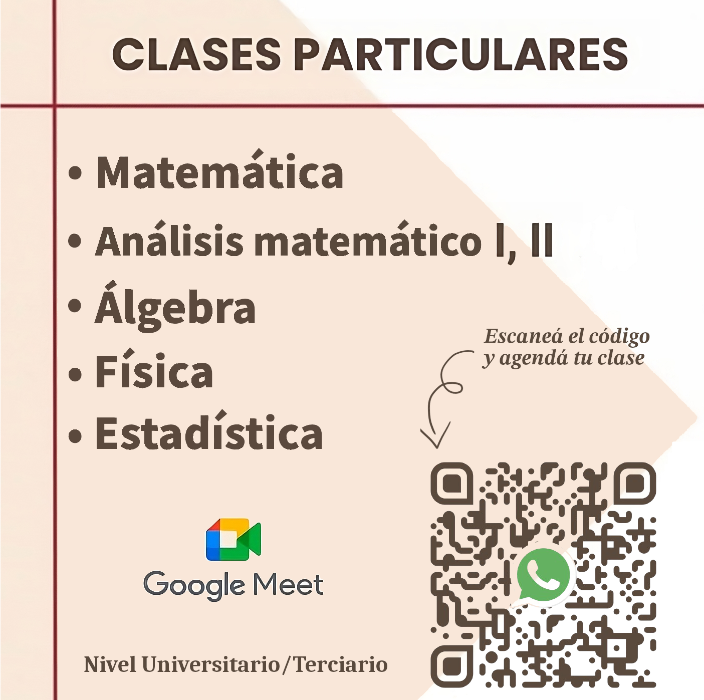

Experiencia Docente (2016-Presente)

Brindo clases particulares personalizadas de Física y Matemática para todos los niveles. Mi enfoque se centra en la comprensión profunda de los conceptos y su aplicación práctica a través de la resolución de problemas.
En el siguiente enlace, podes explorar algunos ejemplos del material didáctico que he desarrollado en formato Markdown en tiempo real durante las clases virtuales.
Material
Armado y reparación de pc

Especialista en armado y reparación de PCs, incluyendo diagnóstico avanzado de hardware, reemplazo de componentes, actualizaciones de rendimiento y mantenimiento preventivo. Experiencia en instalación y configuración de sistemas operativos, optimización de software y resolución de fallas críticas tanto a nivel doméstico como empresarial.
Experiencia en uso de python y git

Tengo experiencia en Python, especialmente en análisis de datos con bibliotecas como Pandas, NumPy, Matplotlib, Scipy y Seaborn. También he trabajado con frameworks como Keras para proyectos de Machine Learning.
Además, estoy familiarizado con entornos de desarrollo como Anaconda y Visual Studio Code, y utilizo Git para el control de versiones.
Algunos de mis proyectos están disponibles en GitHub, los podes ver en el siguiente enlace.
Proyectos